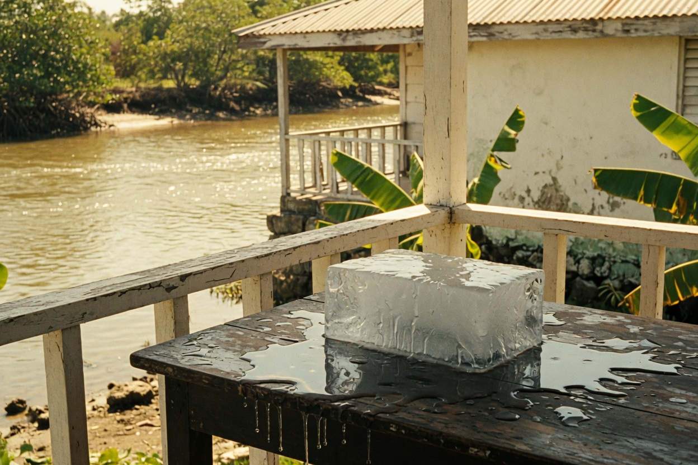
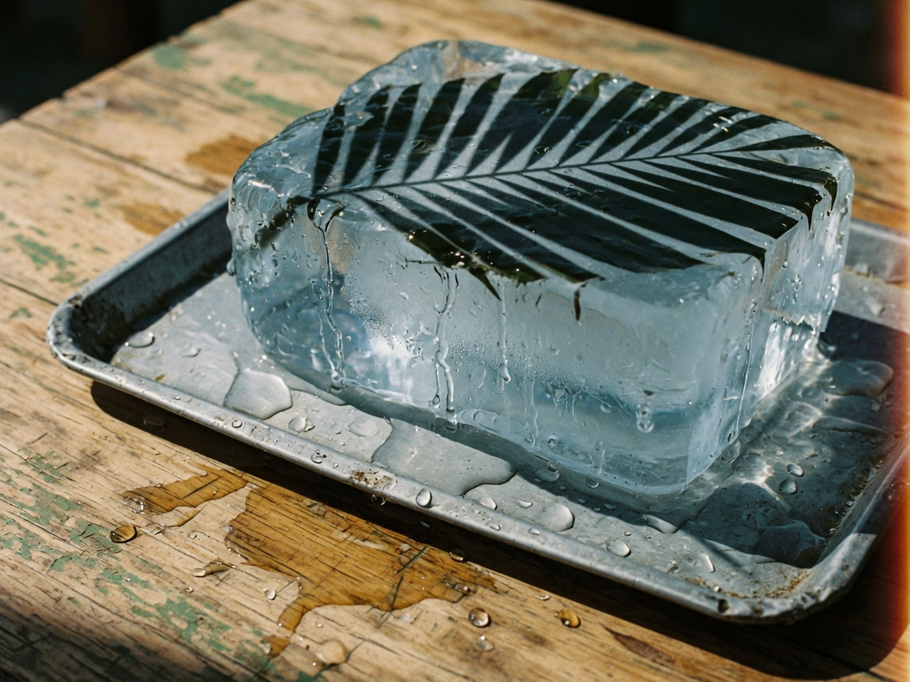
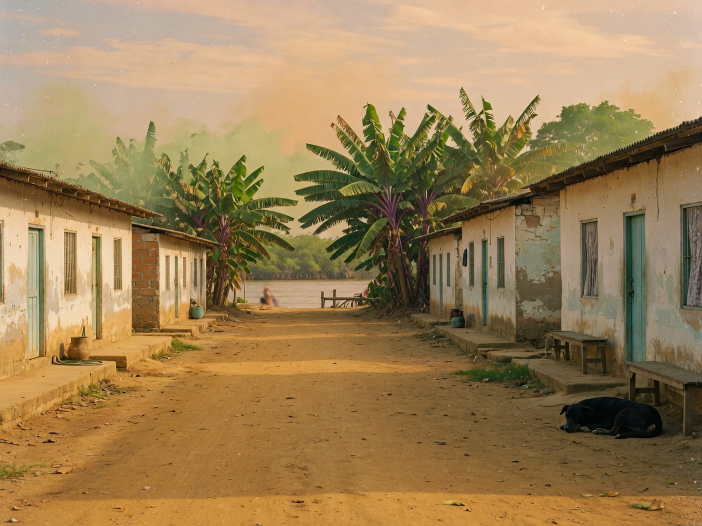
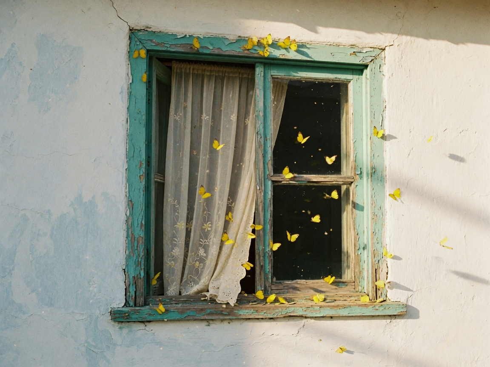

Future inside the past
Spanish: había de recordar. English: was to remember. The book starts at the end of a life and walks backward to a child touching ice. Time is a loop. English has a tense for that.

You already have this book in Spanish.
Tonight you say the ice in English.
García Márquez wrote it in Spanish. Gregory Rabassa carried it into English. You do not have to be Rabassa. You have to be able to say it out loud, like a teacher who loves the book.
Many years later, as he faced the firing squad, Colonel Aureliano Buendía was to remember that distant afternoon when his father took him to discover ice.
Spanish: había de recordar. English: was to remember. The book starts at the end of a life and walks backward to a child touching ice. Time is a loop. English has a tense for that.
Many years later, he was to remember the ice.
José Arcadio Buendía takes the children to the gypsies. Aureliano puts his hand on the ice. In Spanish you can hide the subject. In English, the weather and the thing both want it.

Was ice. Is cold. Was a miracle.
It was ice. It is cold. It was a miracle.
His father took him to discover ice.
English speakers will ask you about it. If you freeze on Aureliano, the conversation dies. Tap a name. Hear it. Then you can talk.

The book is about a family in Macondo that cannot escape its own story.
The English title is One Hundred Years of Solitude, not of loneliness. You once said I wanted stay alone. Three different words. The book lives in the first.
The Buendías live in solitude, not just loneliness.
I wanted to stay alone.
Races condemned to one hundred years of solitude did not have a second opportunity on earth. You do not have to recite it. You have to know what solitude is doing in that sentence.
When José Arcadio Buendía dies, yellow flowers fall on Macondo. English weather always starts with it. This is your track, wearing Gabo.

It's raining yellow flowers in Macondo.
It was as if time had stopped.
It's on the page. It was excellent.
Nobody in New Jersey wants the whole family tree. They want three sentences and your voice. Read-aloud is your strength. Use it.
I love One Hundred Years of Solitude. It's about the Buendía family in Macondo. The first wonder is ice. They live in solitude, not just loneliness.
Gabo and your English. You can miss and try again.
Four sentences in English. You are from Maracaibo. You teach PreK in New Jersey. You still remember ice.
1. Why do you love this book?
2. What is the ice, in one sentence?
3. Solitude or loneliness — which one, and why?
4. A sentence with it that you used to drop.
Saved on this phone. Read it out loud to Gabriel.
Many years later, it was ice. Say it. Then say it again, slower.
ARCHES · Alejandra · Macondo · 2026-08-27